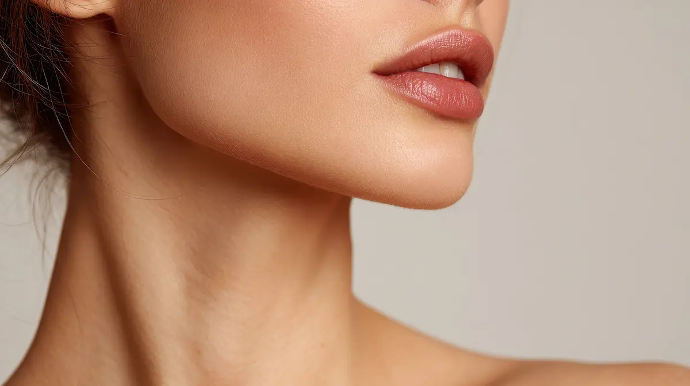
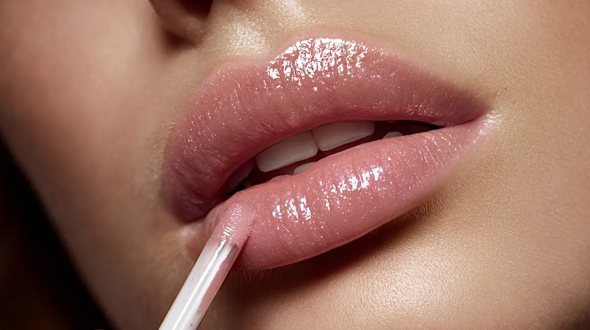

Colour choice
Softer shades can feel beautifully natural, though they may need refreshing sooner than deeper tones.
Lip blush guide
Lip blush is designed to be long lasting, but it is also intentionally soft. The prettiest results are often the ones that fade gently and remain flattering rather than looking heavy.
Clients visit Gemma from Hull, Hessle, Beverley, Cottingham and East Yorkshire for natural lip colour that simplifies everyday makeup.

Longevity
There is no one-size-fits-all answer. Skin, natural lip tone, lifestyle, sun exposure, aftercare and the chosen colour can all influence how the pigment settles and fades.
Softer shades can feel beautifully natural, though they may need refreshing sooner than deeper tones.
Following aftercare helps the lips settle as evenly as possible after treatment.
Sun exposure, skincare habits and general lip care can influence how fresh the colour remains.
Maintenance
Some clients choose a colour boost when they feel the result has softened more than they would like. Your ideal timing depends on how your lips heal, your preferred level of colour and how low-maintenance you want the result to stay.
For treatment details, visit the main lip blush page. If you are planning around an event, read the lip blush healing guide too.

FAQ
Lip blush is long lasting, but fading varies depending on skin, lifestyle, aftercare and the softness of the colour chosen.
Lip blush gradually softens over time. Some clients choose a colour boost to refresh the result as it fades.
Following aftercare, protecting lips from unnecessary sun exposure and keeping the lips well cared for can help the result stay fresher.
Soft colour, carefully planned
Gemma can help you choose a shade and finish that fits your everyday style.